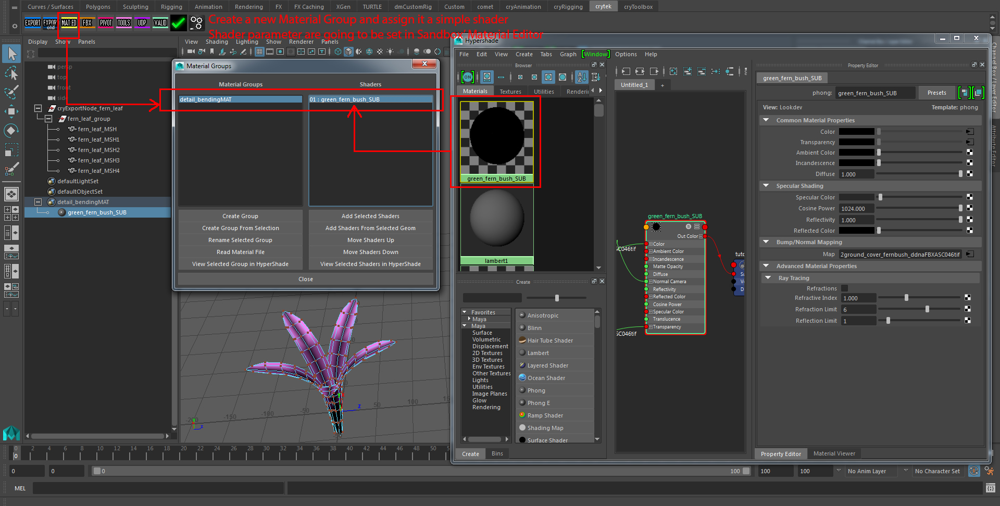
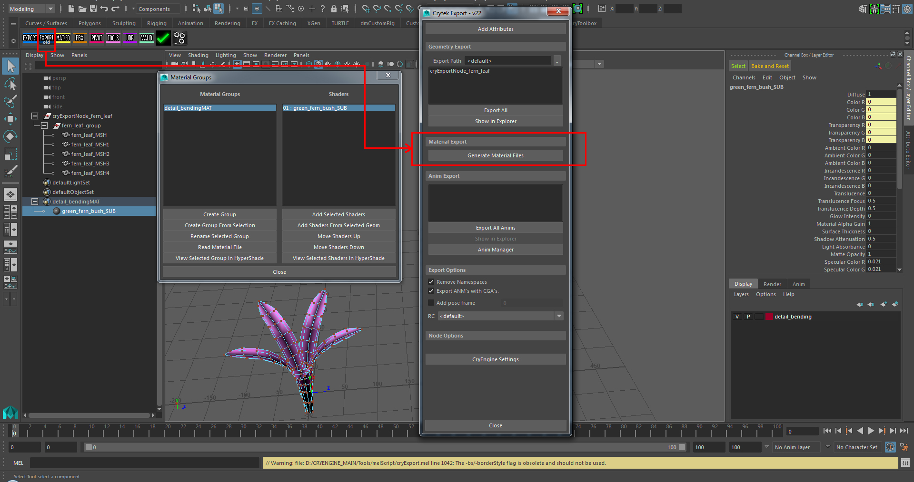
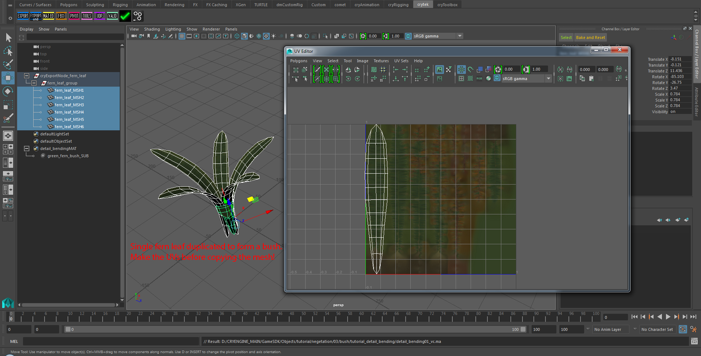
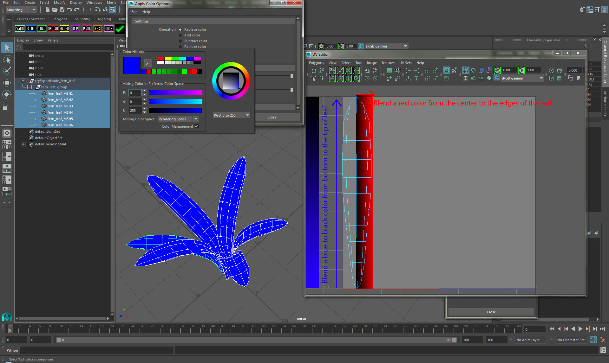
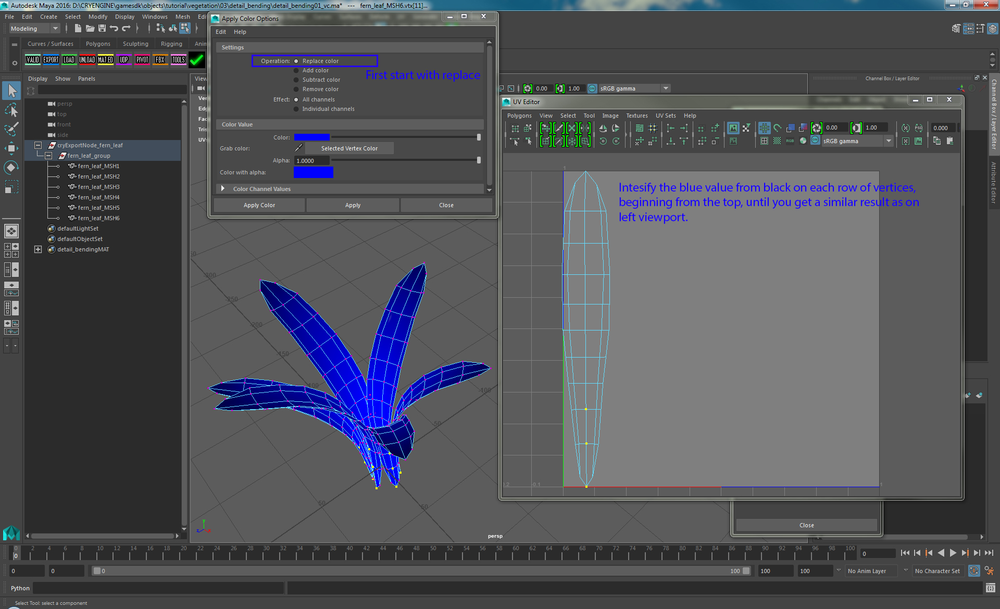
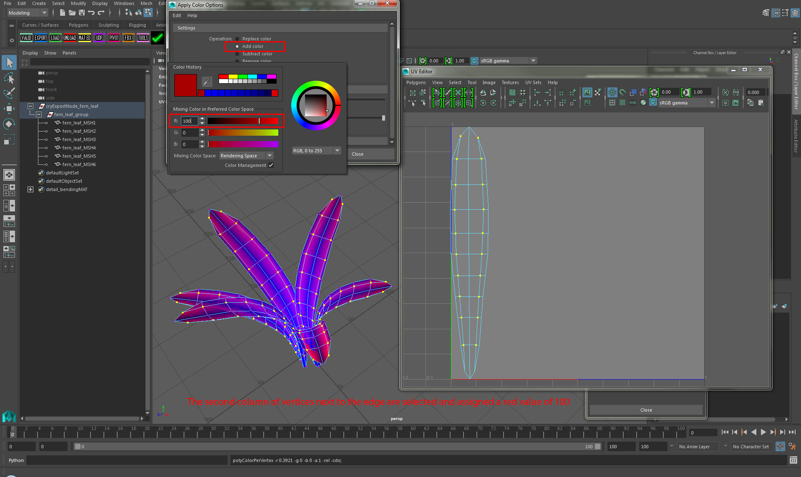
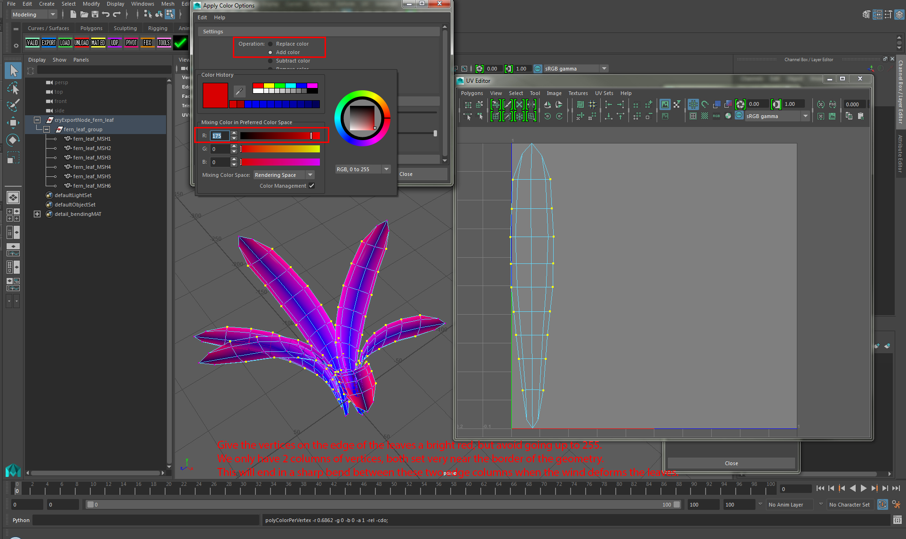
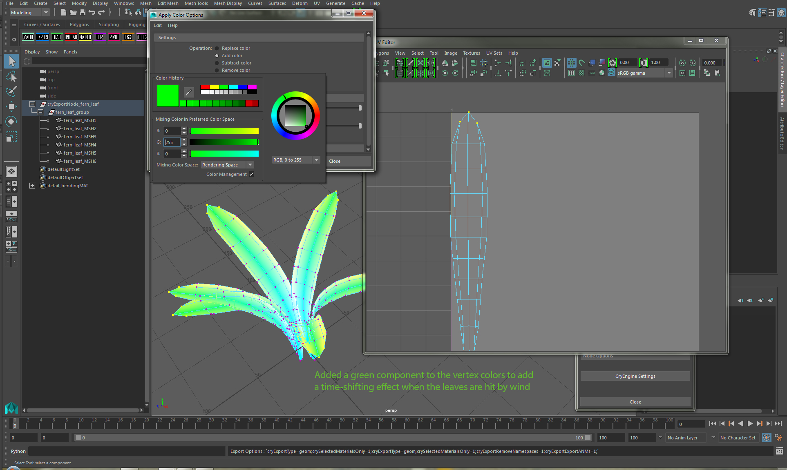
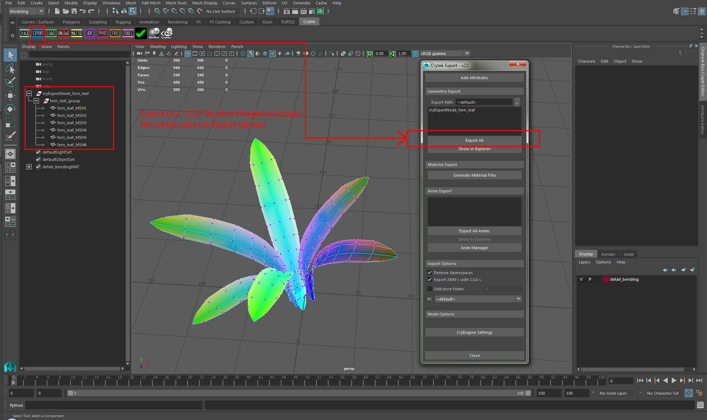

Overview
In this tutorial, we will be using our Detail Bending system and show you the process of how to setup vertex movement through vertex paint. We will use all three vertex color channels to control different movement behaviors for the leaf geometry of our bush asset. This effect is meant to be used on vegetation objects and will help us to create a performance friendly bending effect on the bush asset. It works best for vegetation with big leaves like palm trees and fern bushes.

Pic1: Final asset with underlying vertex color for this system to work
This system applies certain movement behaviors to vertices depending on the color that you assign them. Later on the intensity of those movement behaviors can be adjusted through shader parameters.
Tutorial Files
Source Maya scene with exported CRYENGINE files:
Pre-requisites for this Tutorial
Before you continue with this tutorial, make sure to have read and understood the following:
- How to Install CryMayaTools
- The Basic CRYENGINE Maya Workflow
- CRYENGINE Exporter
- Maya Unit Scale to Match up With CRYENGINE Unit System
Helpful Information
Make sure to keep the following things in mind while you work on your asset:
- The movement of the vegetation is completely controlled by the Wind Environment parameters, settings of your vegetation material and the vertex color you applied.
- The polygons should be regularly distributed on the bending geometry to avoid deformation artifacts while bending.
- All three vertex color channels have different influences on your leaf, so assign only one color component at a time to the vertices in Maya.
- Wind parameter in CRYENGINE needs to be enabled since it influences the blue channel leaf bending and the red channel small bending amplitude. You can do this under Tools Menu -> Level Editor -> Level Settings by changing the wind vector value (10,0,0).
- Place the asset as a vegetation object using the Vegetation editor.
- Bending needs to be activated in the Vegetation editor.
- Detail Bending needs to be activated in the Material Editor.
- Leaf mesh parts can be distributed over several mesh objects but all must be grouped under one group node.
Initial Maya setup
For this tutorial, we will be creating our asset in the following directory.
<Your_Project>\Assets\Objects\tutorial\vegetation\03\bush\detail_bending\
To being with, save your Maya scene to this location. All our exported assets will be saved in there. Some of the textures that we use will come from an already existing asset and the location of the existing asset will be provided later in the tutorial.
We will continue with the assumption that you have already created the asset, since this is not a Maya modeling tutorial. We will begin with preparing the asset ready for CRYENGINE. The material setup must be set inside Sandbox's Material Editor. You cannot set up a Crytek specific shader correctly in Maya.
Material
As in the former vegetation tutorials about merged mesh grass blades or grass patches, we must create an empty Material Group and have any Maya shader assigned to it. Assign appropriate names to the Material Group and its shader, so you can find them later.

Pic2: Material Setup
Export out the material
Now we have configured the Material Group for the fern leaf object. You can generate the CRYENGINE material file in the same folder as your source Maya scene:
<Your_Project>\Assets\Objects\tutorial\vegetation\03\bush\detail_bending\detail_bendingMAT.mtl>

Pic3: Exporting out the *.mtl file
Geometry
Our geometry for this tutorial is going to be a fern bush. This plant is perfect for explaining this type of technology. Create a single big leaf mesh for your fern bush and apply the shader that you have created for the fern leaf (tutorial_detail_bending_SUB). Make sure that the geometry of your leaf is cleanly tessellated. Otherwise deformation may not look good. Use Maya's UV Editor to adjust its UV shell to fit around one of the leaves on the texture.

Pic4: Geometry of a single leaf
Copy the geometry to form a fern bush
Use Maya's Duplicate function to make several copies of the single leaf. You are free to scale, rotate and translate the leaves. This does not matter because the mesh objects use the parent group node transformation matrix.

Pic5: Single fern leaf duplicated several time to form the bush
Adding vertex color
The next step involves assigning vertex color to our geometry. We will take usage of all three vertex colors to control different movement behaviors for the leaf geometry.
| Red | Creates irregular and small bending at the outsides. Black means no bending and a full 255/0/0 red means the highest amount of bending. The movement of smaller shapes itself goes back and forth on the X axis. |
|---|---|
| Blue | Creates slow and regular bending. Black means the highest amount of bending and a full 0/0/255 blue means no bending at all. The movement of the big shapes itself goes back and forth on the Z axis. |
| Green | Delays the start of the movement. Each green shade starts the bending at a different time to create bending variations. |
The common way to paint or assign vertex colors for detail bending vegetation:
- Start by giving the centerline of you leaf a blue color (0,0,255) ->no movement. Then you may want to paint a falloff from blue to black from the bottom to the top of the leaf, so that the tip of the leaf is affected more by bending.
- Make falloff to red on the side or edges of the leaf.
- Apply a green color to the whole leaf or add a gradient of green to the vertex rows. Move on to the next leaf and give it different green color. This will add a very subtle time-shifting effect to the leaves when they are hit by the wind.
At this stage, it is hard to tell if you painted the vertex color values right. Mostly, the exact vertex color is not that critical as long as you have any. Your material settings and the wind vector will have the biggest visual impact on how the deformation is going to be.
Later when you are adjusting the wind vector and the amplitude of the Detail Bending in your vegetation Material, you might end up with the leaf folding upward along the center line of the leaf. Hence, you have to take special care while using these values. It's recommended to keep the changes to small values, such as 0.1 steps.

Pic6: Start with a bright blue, so you have no movement at all for each leaf
Add a blue gradient from blue to black as shown in Pic:7. This way you get the bottom staying in place while the tip of the leaves will undulate in the wind.

Pic7: Blue gradient
Now for the detail bending to shine we need to add the red component to the vertex colors. We will begin with the second column of vertices next to the edges of the leaf. Assign them a red value of 100.

Pic8: Begin adding the red component to the vertex color (on the penultimate vertex row)
Since we want the edge of the fern bush to bend the most, we will give these vertices a bright red. But we do not have enough geometry resolution to really add a nice smooth bending deformation. We should stick with values lower than 100% Red (255,0,0) and aim for the color (175,0,0). Keep in mind, you must not replace the color.

Pic9: Adding the last red value to the outer edges of the leaves
For the time-shifting effect, we need to add the green component to the vertex colors. Depending on how many copies of the leaves you made, you can randomly add a green value to the vertex colors. You may want to add gradients of green to a single leaves or change a single green color for a whole leaf. This is up to you. But the time-shifting effect of the green channel is so subtle, you will hardly notice it if you do not make several fern bushes with different green vertex colors to compare.

Pic10: Adding a green component to make a time-shifting effect
Export the Geometry
We are now ready to export our geometry to the engine. As you may already know, you can put several mesh objects under one group in Maya. You do not have to combine the mesh. This is useful if you want to try different vertex colors, you can pick the individual leaf for manipulation.

Pic11: Final Maya scene hierarchy to CRYENGINE export
Continue to CRYENGINE
We have now finished the setup for the Maya portion of the tutorial. To continue, move to the next page where we configure the material and use the Vegetation Tool to place down some of these detail bending assets.